Hướng dẫn
sử dụng BMBPlayer
Dành cho Quản lý chi nhánh & Admin
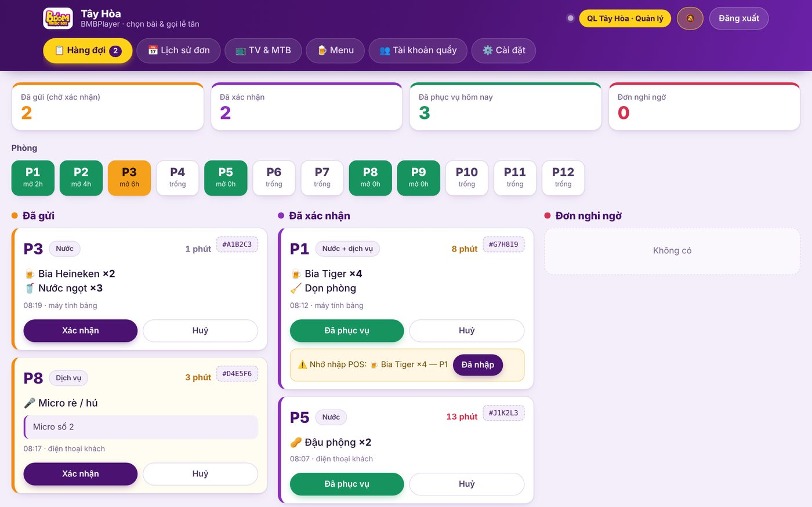
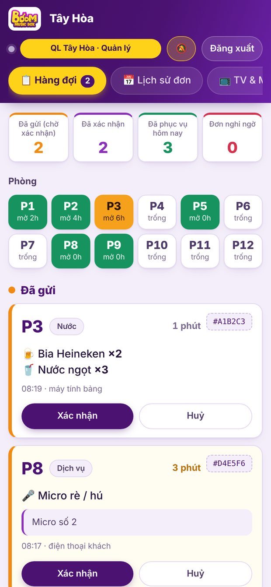
Làm quen với BMBPlayer
Một hệ thống cho cả việc hát và việc phục vụ trong phòng.
TV trong phòng
Phát bài hát khách chọn. Góc trái luôn có mã QR để khách quét, và hiện các yêu cầu khách đã gửi cho lễ tân.
Điện thoại khách & máy tính bảng
Chọn bài, điều khiển TV, gọi lễ tân, gọi nước theo số lượng, báo sự cố — không cần cài ứng dụng.
Quầy phục vụ
Nhận yêu cầu ngay lập tức, xác nhận, theo dõi phòng, quản lý TV, menu và nhân viên.
Ai làm được gì?
| Chức năng | Nhân viên quầy | Quản lý chi nhánh | Admin | Admin cao nhất |
|---|---|---|---|---|
| Hàng đợi, lịch sử đơn, mở/đóng phòng, gán TV, QR khách | ✔ | ✔ | ✔ | ✔ |
| Báo món Còn hàng / Hết hàng | ✔ | ✔ | ✔ | ✔ |
| Sửa menu: thêm, ẩn, bỏ, sắp xếp món | khi được cấp quyền | ✔ | ✔ | ✔ |
| Tài khoản quầy, gỡ / thu hồi máy tính bảng, vân tay | — | ✔ | ✔ | ✔ |
| Chọn chi nhánh, thêm / xoá phòng, menu mẫu toàn chuỗi | — | — | ✔ | ✔ |
| Phát hành bản ứng dụng mới | — | — | — | ✔ |
Cài ứng dụng & đăng nhập
Dùng app BMBPlayer trên Android để nhận chuông và rung ngay cả khi tắt màn hình.
Cài BMBPlayer trên điện thoại, máy tính bảng hoặc TV box
- Quét mã QR bên cạnh bằng camera, hoặc mở trình duyệt vào bmb.id.vn/app.apk để tải ứng dụng.
- Mở file vừa tải rồi bấm Cài đặt. Máy hỏi quyền “cài ứng dụng từ nguồn này” thì cho phép.
- Lần đầu mở, ứng dụng hỏi dùng làm TV, Máy tính bảng hay Quầy — chọn đúng vai trò của thiết bị.
bmb.id.vn/app.apk
Cho TV tự mở BMBPlayer mỗi khi bật máy
Cài xong, hãy làm 2 việc sau trên mỗi TV để bật TV lên là vào thẳng BMBPlayer, nhân viên không phải mở tay. Mở menu ẩn bằng cách bấm QUAY LẠI 3 lần liên tục (hoặc nút MENU trên điều khiển).
- Đặt BMBPlayer làm màn hình chính. Chọn dòng “Chọn ứng dụng màn hình chính (Home)”. Android hiện danh sách — chọn BMBPlayer, rồi bấm Luôn luôn (không chọn “Một lần”). Từ nay nút HOME và mỗi lần bật TV đều đưa về BMBPlayer.
- Bật tự mở khi bật máy. Chọn dòng “Tự mở khi bật máy: TẮT (bấm để bật)”. Dòng này đổi thành BẬT là xong. Nếu TV hỏi quyền “hiển thị trên các ứng dụng khác”, hãy cho phép cho BMBPlayer.
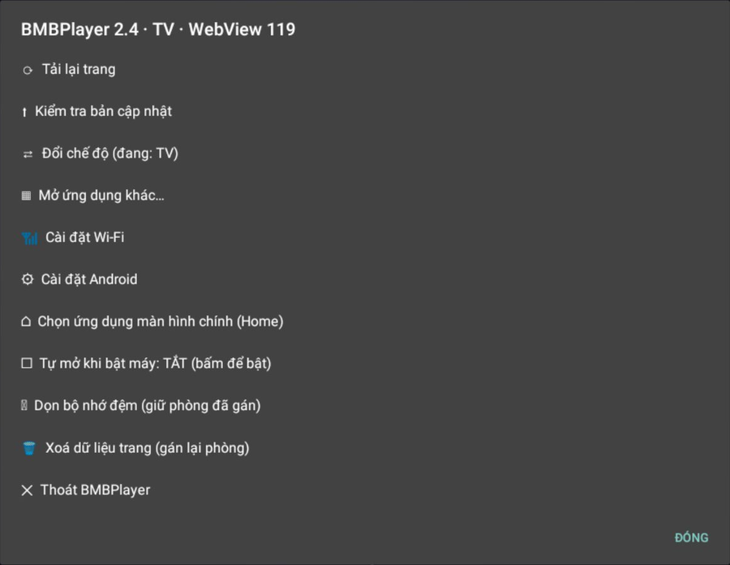
Máy hiện cảnh báo “Đã chặn ứng dụng”? Làm như sau
Play Protect cảnh báo vì BMBPlayer được phát hành riêng, không qua CH Play. Ứng dụng tải từ đúng địa chỉ bmb.id.vn là an toàn. Đừng bấm Tôi hiểu — nút đó sẽ huỷ việc cài.
- Bấm Chi tiết khác (mũi tên xuống).
- Chữ nhỏ Tiếp tục cài đặt hiện ra phía dưới — bấm vào đó.
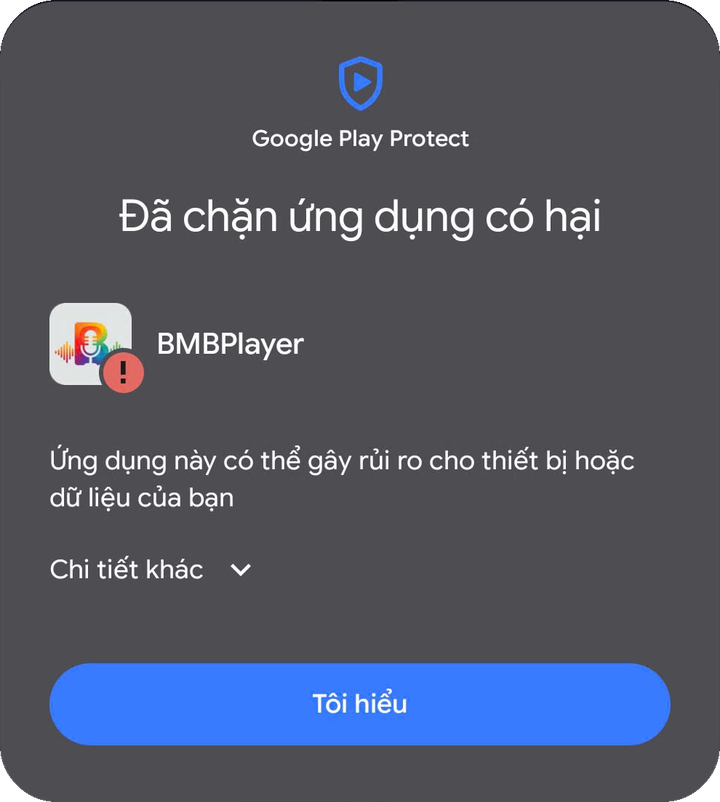
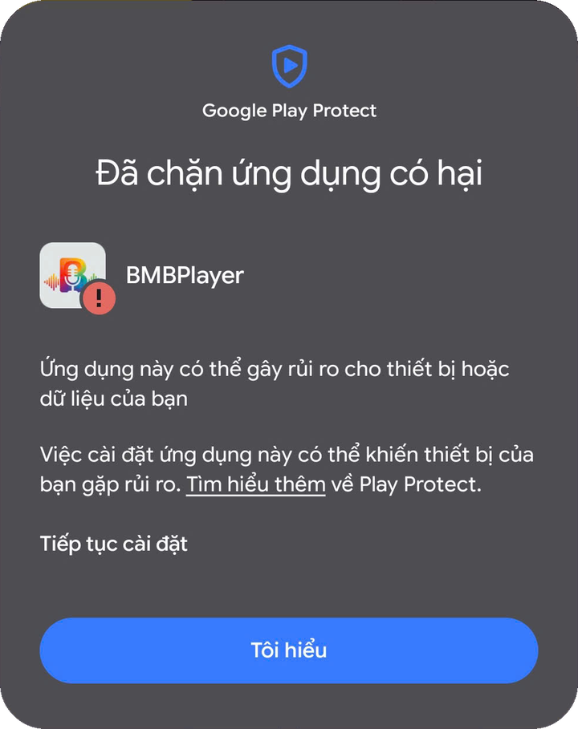
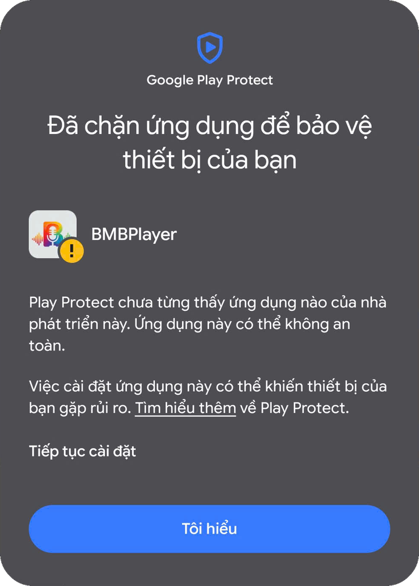
Tuỳ máy và đời Android, hộp thoại có thể hiện một trong các dạng trên — cách làm giống nhau: tìm chữ “Tiếp tục cài đặt”.
Đăng nhập bằng tài khoản được cấp
Nhập tên đăng nhập rồi bấm Đăng nhập. Tài khoản quản lý chi nhánh và admin có thêm các tab Menu, Tài khoản quầy, Cài đặt. Admin còn có ô chọn chi nhánh ngay trên đầu trang.
Đã bật vân tay? Chạm Đăng nhập bằng vân tay — nhanh hơn nhiều (xem chương 7).
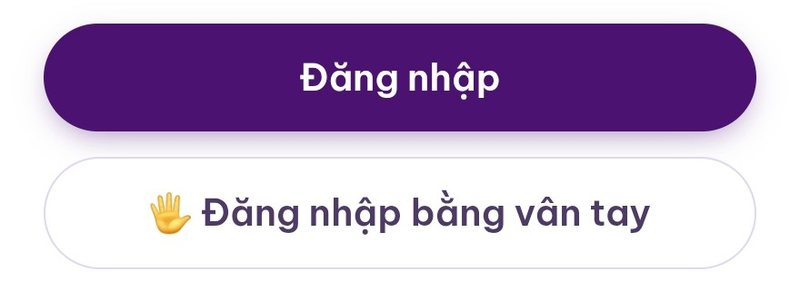
iPhone, iPad không có file APK — dùng trang quầy trên Safari
App BMBPlayer (APK) chỉ dành cho Android. Trên iPhone/iPad, nhân viên quầy và quản lý dùng trang web quầy và cài nó ra Màn hình chính như một ứng dụng — nhận được cả thông báo đơn mới.
- Phải dùng Safari (không phải Chrome trên iPhone) để thấy mục “Thêm vào MH chính”. Cần iOS / iPadOS 16.4 trở lên.
- Luôn mở quầy từ biểu tượng BMB Quầy trên Màn hình chính, đăng nhập rồi bấm 🔔 → Bật thông báo → chọn Cho phép. Không bật được ở tab Safari thường.
- Muốn nhận đơn kịp: bật tiếng chuông, tắt Không làm phiền / Tập trung, và cho phép thông báo của BMB Quầy trong Cài đặt → Thông báo. Telegram vẫn báo song song.
Hàng đợi — trái tim của quầy
Mọi yêu cầu của khách hiện ở đây theo thời gian thực.
Số liệu và tình trạng phòng
- Bốn ô số trên cùng: Đã gửi chờ xác nhận · Đã xác nhận · Đã phục vụ hôm nay · Đơn nghi ngờ.
- Ô phòng cho biết phòng nào đang hát và đã hát bao lâu:
Dưới đó là ba cột: Đã gửi → Đã xác nhận → Đơn nghi ngờ. Đơn mới luôn nằm đầu cột.
Xác nhận → Phục vụ → Nhập POS
- Đơn mới ở cột Đã gửi: bấm Xác nhận — khách thấy ngay “đã xác nhận” trên máy của họ. Không làm được thì bấm Huỷ.
- Mang đồ vào phòng xong, bấm Đã phục vụ.
- Đơn có nước sẽ nhắc “Nhớ nhập POS”. Nhập vào máy tính tiền rồi bấm Đã nhập để cuối ca đối soát không sót.
Thời gian chờ đổi màu xám → vàng → đỏ khi đơn để lâu. Mỗi đơn có mã #XXXXXX để tra cứu.
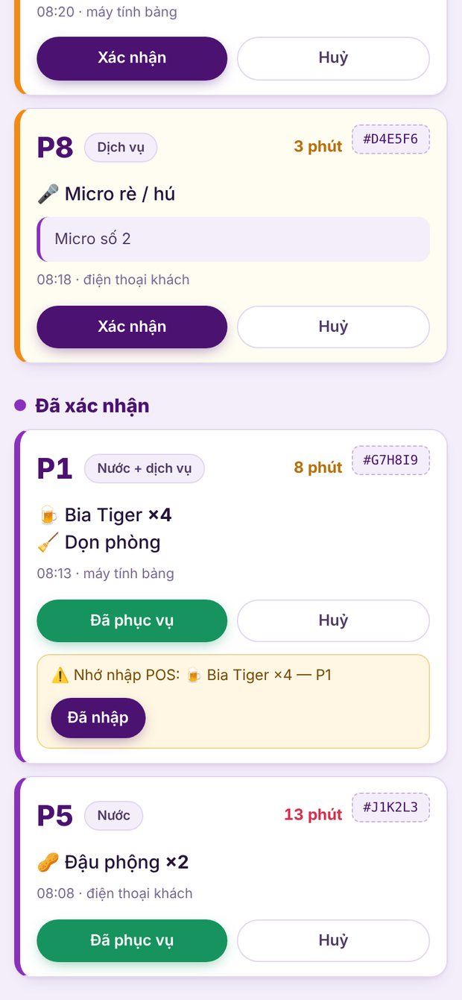
Có đơn là biết ngay — kể cả khi tắt màn hình
- Khi app ở chế độ Quầy, thanh thông báo luôn có dòng “BMB Quầy đang nhận đơn”.
- Đơn mới kêu chuông riêng và rung, rồi nhắc lại mỗi 30 giây cho tới khi có người bấm Xác nhận.
- Chi nhánh đã nối Telegram nhận thêm tin báo trong nhóm.
- Dùng trang web thay cho app? Bấm nút 🔔 trên đầu trang để bật thông báo trên máy đó.
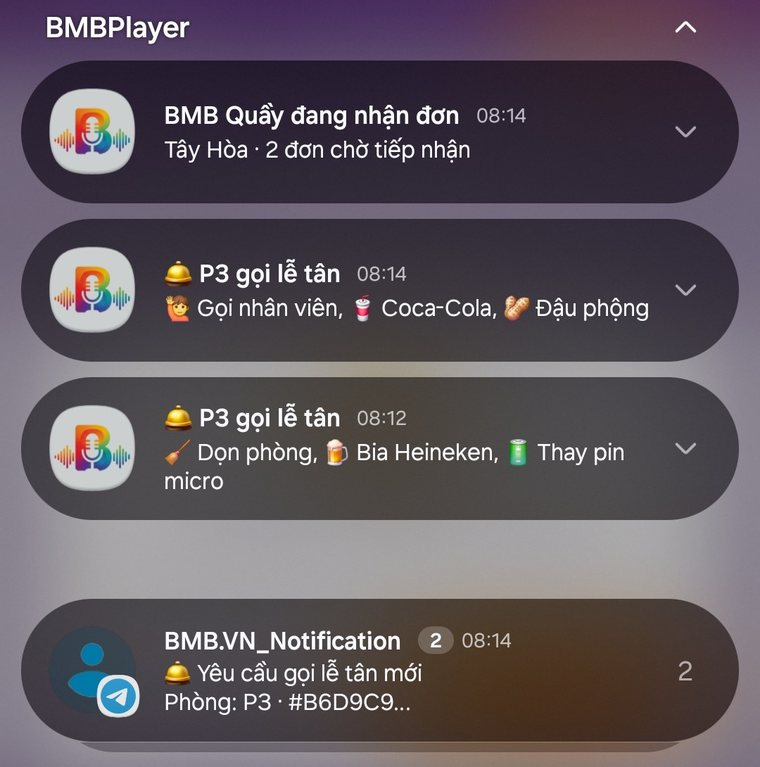
Lịch sử đơn & đối soát
Dùng cuối ca để khớp với báo cáo máy tính tiền.
- Tab 📅 Lịch sử đơn: xem lại đơn theo ngày, dùng nút ◀ ▶ hoặc Hôm nay.
- Một ngày tính từ 06:00 sáng đến 06:00 sáng hôm sau — trọn một ca mở cửa, nên đơn lúc 1–2 giờ sáng vẫn thuộc ngày hôm trước.
- Cột POS cho biết đơn có nước đã được nhập vào máy tính tiền hay chưa; ô “Có nước, chưa nhập POS” là việc cần xử lý trước khi chốt ca.
- Bấm ⬇ Tải CSV đối soát để lấy bảng chi tiết, mở được bằng Excel.
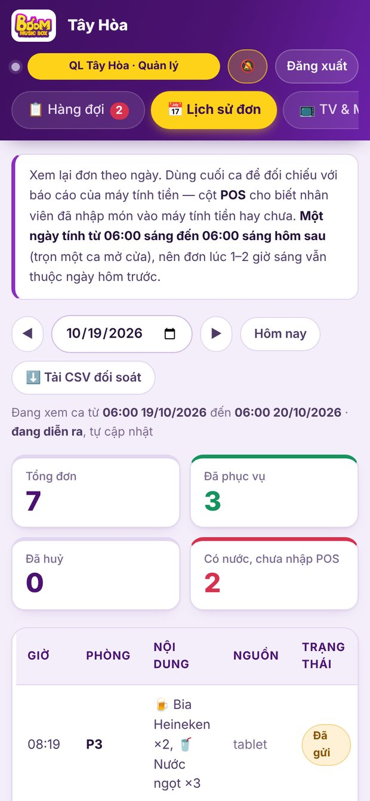
TV, máy tính bảng & phòng
Mỗi phòng có 1 TV và có thể có 1 máy tính bảng.
Vào tab 📺 TV & MTB
- Mỗi phòng hiện trạng thái: Đang mở từ…, TV đã nối, máy tính bảng, số điện thoại đang kết nối.
- Mở phòng khi khách vào. Mỗi lần mở là một QR khách mới trên TV — khách lượt trước không vào lại được.
- Đóng phòng khi khách ra: điện thoại khách bị ngắt và hàng chờ bài trên TV được xoá.
- QR khách / Đổi QR khách: dùng khi TV hỏng hoặc khách nhờ quét lại.
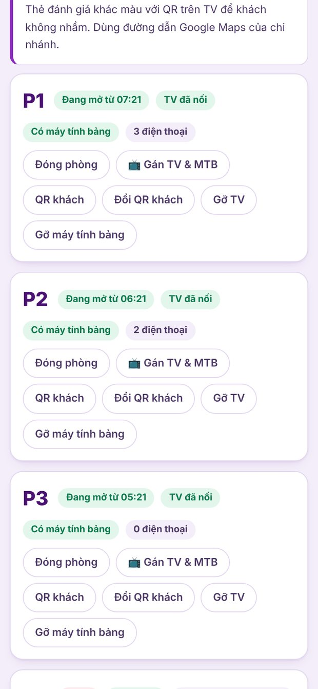
Thiết bị chưa gán sẽ hiện mã 6 số + QR
- Bật TV hoặc máy tính bảng mới: màn hình hiện mã gán 6 số và QR.
- Trên điện thoại đã đăng nhập quầy, quét QR đó bằng camera — trang quầy mở thẳng, đầu trang báo “đang chờ gán”. (Hoặc bấm 📺 Gán TV & MTB ở phòng rồi quét / nhập mã.)
- Bấm Gán … này vào đây ở đúng phòng. Thiết bị tự vào phòng sau vài giây.
Máy tính bảng đã gán sẽ tự quét QR trên TV khi cần đổi phòng. Cần chuyển thiết bị: dùng Gỡ TV / Gỡ máy tính bảng.
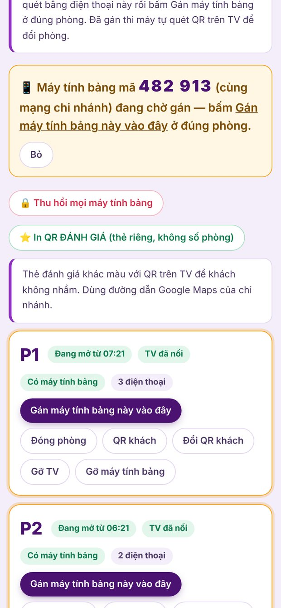
QR góc trái TV — cửa vào của khách
Khi phòng mở, TV hiện QR kèm tên phòng ở giữa. Khách quét bằng camera điện thoại là vào được trang chọn bài và gọi lễ tân. Bên dưới QR, TV hiện luôn các yêu cầu khách vừa gửi cho lễ tân.
Cần in thẻ QR đánh giá cho khách? Bấm ⭐ In QR ĐÁNH GIÁ (thẻ riêng, không có số phòng) — chi nhánh cần có đường dẫn Google Maps trong app quản lý BMB.
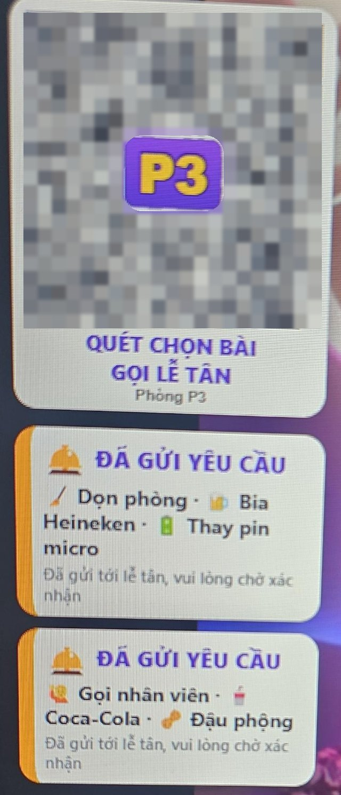
Menu nước & dịch vụ
Khách chỉ thấy những gì còn bán — bạn chủ động bật tắt ngay tại quầy.
Hết hàng thì bấm một nút
- ✅ Còn hàng ⇄ ⛔ Hết hàng: món hết tự ẩn khỏi màn hình khách; hàng về bấm lại.
- Món được nhóm: Bia · Nước uống · Đồ ăn · Phục vụ thêm · Dịch vụ / báo sự cố. Dịch vụ là nút bấm gọi; nước là chọn số lượng.
Quản lý & tài khoản được cấp quyền còn có:
- Ẩn / Hiện tạm không bán · Bỏ xoá khỏi menu chi nhánh (đơn cũ không bị ảnh hưởng) · ▲ ▼ xếp thứ tự hiện cho khách.
- ＋ Chọn từ menu mẫu lấy món có sẵn của chuỗi · ✏️ Tạo món riêng cho chi nhánh.
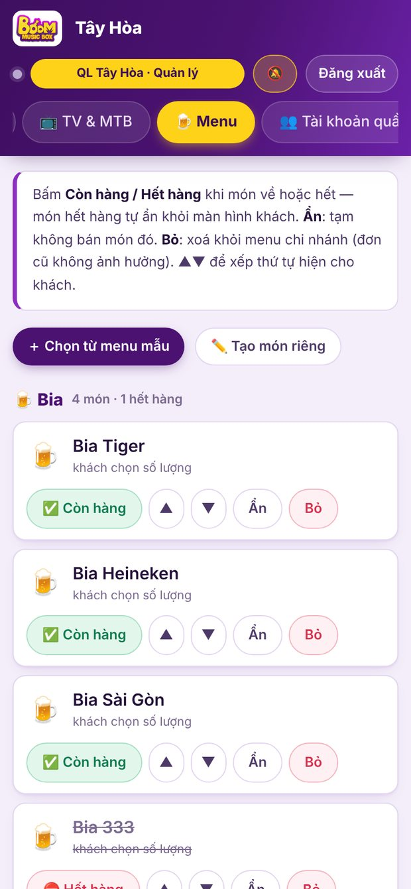
Tài khoản & vân tay
Dành cho quản lý chi nhánh và admin.
Tab Tài khoản quầy
Tạo tài khoản cho nhân viên quầy của chi nhánh bằng ＋ Tạo tài khoản mới.
- Khoá: nhân viên bị đăng xuất ngay và không vào lại được. Mở để cho dùng lại.
- Cột Sửa menu: tích để cho phép nhân viên đó chỉnh menu.
Tài khoản quản lý và kỹ thuật được tạo trong app quản lý BMB.
Đăng nhập bằng vân tay
Có trong app BMBPlayer Android bản 2.4 trở lên (không có khi mở bằng Chrome hay iPhone).
- Vào tab ⚙️ Cài đặt → Bật vân tay.
- Làm theo hướng dẫn trên màn hình để xác nhận tài khoản rồi quét vân tay.
- Lần sau chạm Đăng nhập bằng vân tay ở màn đăng nhập.
Máy cần đã đặt khoá màn hình + vân tay (Android 9 trở lên). Thêm vân tay mới trong máy thì bật lại. Tắt vân tay bất cứ lúc nào.
Cập nhật BMBPlayer
Phát hành một lần — mọi TV, máy tính bảng và máy quầy tự báo có bản mới.
⚙️ Cài đặt → Phát hành APK BMBPlayer
- Mở tab ⚙️ Cài đặt trên quầy. Khung đầu cho biết bản đang phát hành.
- Chọn file BMBPlayer.apk đã ký. Trang tự đọc số phiên bản — không cần gõ tay, bản chưa ký hoặc không phải BMBPlayer sẽ bị chặn.
- Bấm Tải lên & phát hành.
Chỉ admin cao nhất thấy mục này. Thiết bị đang chạy bản 2.4 trở lên sẽ tự báo có bản mới.
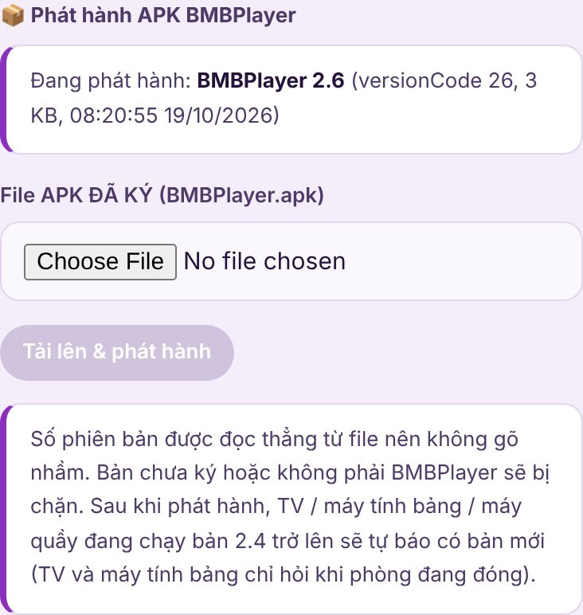
Hộp “Có bản BMBPlayer mới”
- Máy quầy báo khi mở app. TV và máy tính bảng chỉ hỏi khi phòng đang đóng (hoặc buổi sáng 9–12 giờ lúc ít khách), nên không làm gián đoạn khách đang hát.
- Không ai bấm thì hộp tự đóng sau ít phút và hỏi lại sau. Bấm Để sau cũng vậy.
- Bấm Cập nhật ngay, rồi bấm Cài đặt trên hộp của Android. Mất khoảng 1 phút, sau đó BMBPlayer tự mở lại.
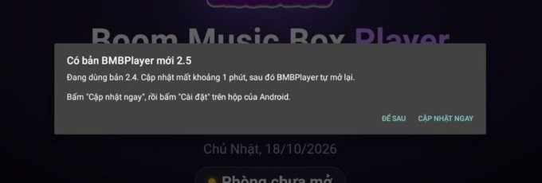
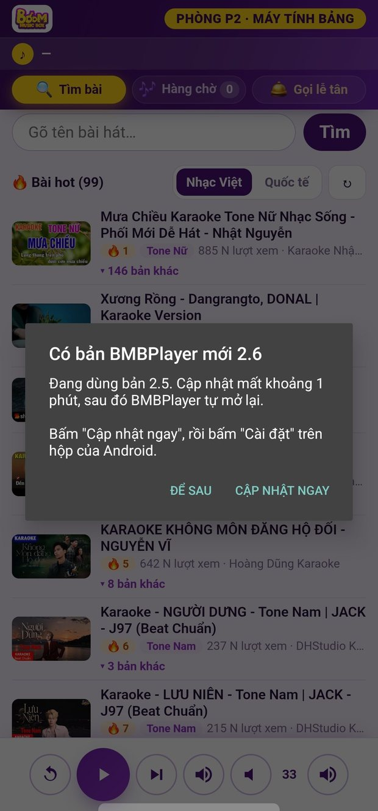
Muốn cập nhật ngay? Mở menu ẩn của ứng dụng
Menu ẩn chỉ dành cho nhân viên. Mở bằng một trong ba cách: bấm QUAY LẠI 3 lần liên tục · bấm nút MENU trên điều khiển TV · chạm 5 lần vào góc trên bên phải màn hình. Rồi chọn Kiểm tra bản cập nhật.
| Mục trong menu | Dùng khi |
|---|---|
| Tải lại trang | Màn hình đứng hoặc lỗi hiển thị |
| Kiểm tra bản cập nhật | Muốn cập nhật ngay |
| Đổi chế độ | Chuyển thiết bị giữa TV / Máy tính bảng / Quầy |
| Cài đặt Wi-Fi · Android | Đổi mạng, chỉnh hệ thống |
| Tự mở khi bật máy | Bật để app tự chạy sau khi mất điện |
| Dọn bộ nhớ đệm | Giải phóng bộ nhớ (vẫn giữ phòng đã gán) |
| Xoá dữ liệu trang | Muốn gán lại phòng từ đầu |
| Thoát BMBPlayer | Đóng ứng dụng |
Gặp sự cố? Xử lý nhanh
Những tình huống hay gặp nhất tại quầy.
| Hiện tượng | Cách xử lý |
|---|---|
| TV báo “Phòng chưa mở — chờ nhân viên mở phòng” | Quầy → tab TV & MTB → Mở phòng đúng phòng đó. |
| TV / máy tính bảng hiện mã 6 số | Thiết bị chưa gán phòng — làm theo mục “Gán TV & máy tính bảng” (chương 5). |
| Khách báo QR hết hiệu lực hoặc không vào được | Nhờ khách quét QR mới ở góc trái TV. Cần thì bấm Đổi QR khách. |
| Mất máy tính bảng | Thu hồi mọi máy tính bảng, sau đó gán lại những máy còn dùng. |
| Không nghe chuông khi có đơn | Kiểm tra app đang chạy chế độ Quầy (có dòng “BMB Quầy đang nhận đơn”), cho phép thông báo và chạy nền. Dùng web thì bấm 🔔. |
| TV đứng hình, trắng màn hình | Mở menu ẩn → Tải lại trang. Vẫn lỗi: Xoá dữ liệu trang rồi gán lại phòng. |
| Cài / cập nhật bị Play Protect chặn | Bấm Chi tiết khác → Tiếp tục cài đặt (chương 2). |
| Báo “Cần cập nhật trình hiển thị web” | Vào CH Play cập nhật Android System WebView (hoặc Google Chrome) rồi mở lại BMBPlayer. |
Boom Music Box · bmb.id.vn© 2026 VMH